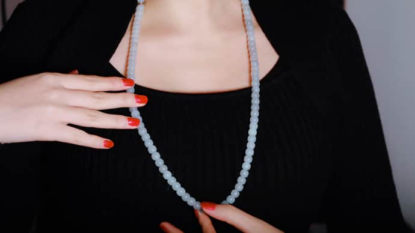
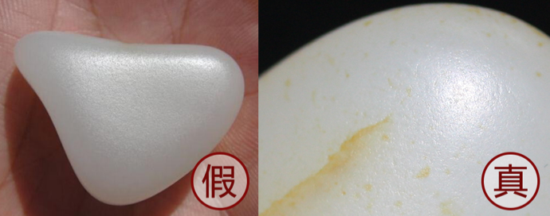
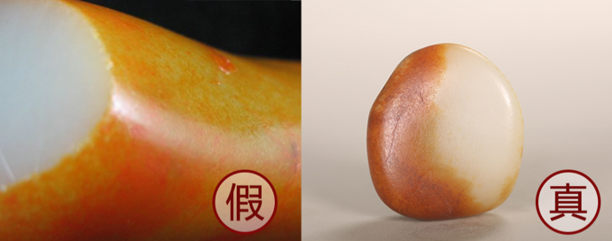
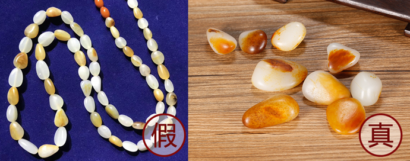
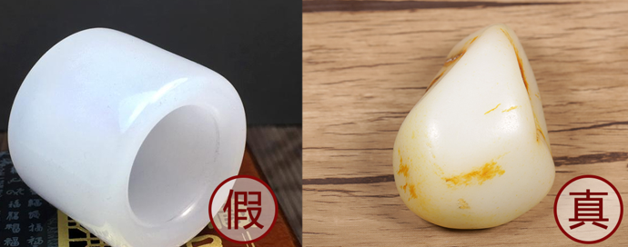
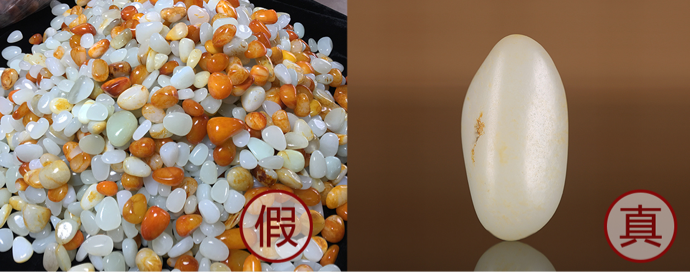
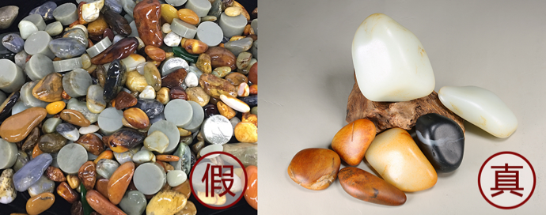
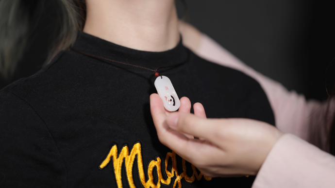
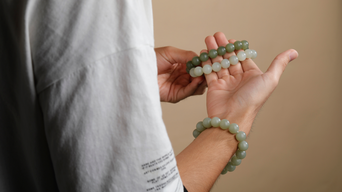

初入和田玉的小白，可能对和田玉的认识不深、接触不多，在和田玉知识的学习过程中、甚至是购买上，常常会走弯路、上当买到假货。
损失了钱财是一方面，心情上的影响更是会让人郁闷许久，甚至是几十年玩玉的老玩家，在一开始也会经过这样一个走弯路的过程。
所以对于和田玉，不建议新手用户一上来就直接购买，当你了解的不多或者是不了解的时候，首先需要做的是——学习。
和田玉中每块玉都是独一无二的，不同的种类会有不同的特征体现，就好比对小学生，不能一上来就要求他做大学生题，总要给他一个学习、知识积累的过程。
当自己无法对和田玉给出判断时，不妨来藏玉APP发布鉴定帖，由官方鉴定师、和田玉资深行业人士、多年和田玉藏家、玉友给出指导性建议。
（添加客服微信：icangyu3免费鉴定和田玉）
藏玉鉴定区域中，每天都有数十位、百位玉友发帖，由官方鉴定师给予收藏指导专业鉴定建议，帮助不少玉友少走弯路，避免上当、吃药。
对待和田玉如同对待课本知识，切忌不闻不问，一定要多听、多看、多学、多感受，切实的走进和田玉的世界。
而在购买上，随着网络平台的越发广泛，不少玉友也会在线上购买和田玉，这个时候，找到一个靠谱的商家或平台，属实是优先给到自己一个定心丸。
（添加客服微信：icangyu3免费鉴定和田玉）
1.忌透：和田玉多是交织结构，看起来透亮、玉中什么都看不出的，就要当心是塑料、玻璃了；
2.忌油：和田玉盘玩会变油，而外部涂抹的油只会干扰我们对玉的判断，甚至是误导；
3.忌光：优质和田玉看起来是温暖、自带油脂感，外表特别光亮、圆的不能再圆的就要小心是仿造的了。
和田玉在一方面可以说是一个小众爱好，市面上鲜少有系统、专业、持续的知识输出，藏玉专业内容团队每天发布和田玉知识性文章，通过图文结合的形式，使众多新手玉友学习、了解和田玉。
（添加客服微信：icangyu3免费鉴定和田玉）
从什么是和田玉，到和田玉的精品收藏指标应该看什么，不论你现在对和田玉熟悉到什么程度，总有你想要或者还未曾涉及的专业知识。
购买和田玉，首先要判定真假，要知道你所购买的是和田玉真品，造假和田玉多是使用化学合成成分，塑料、玻璃等，制成很像和田玉的质地。
